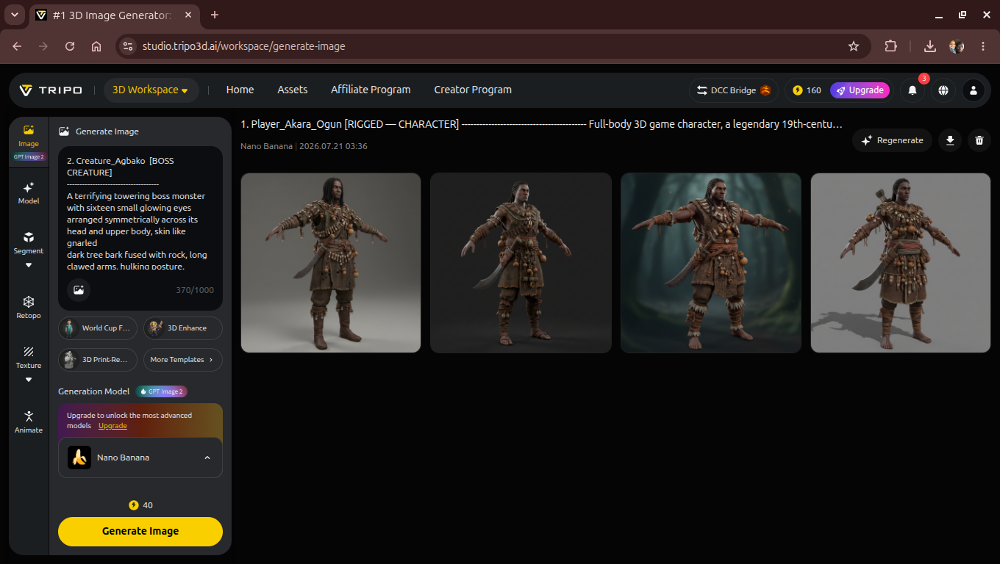
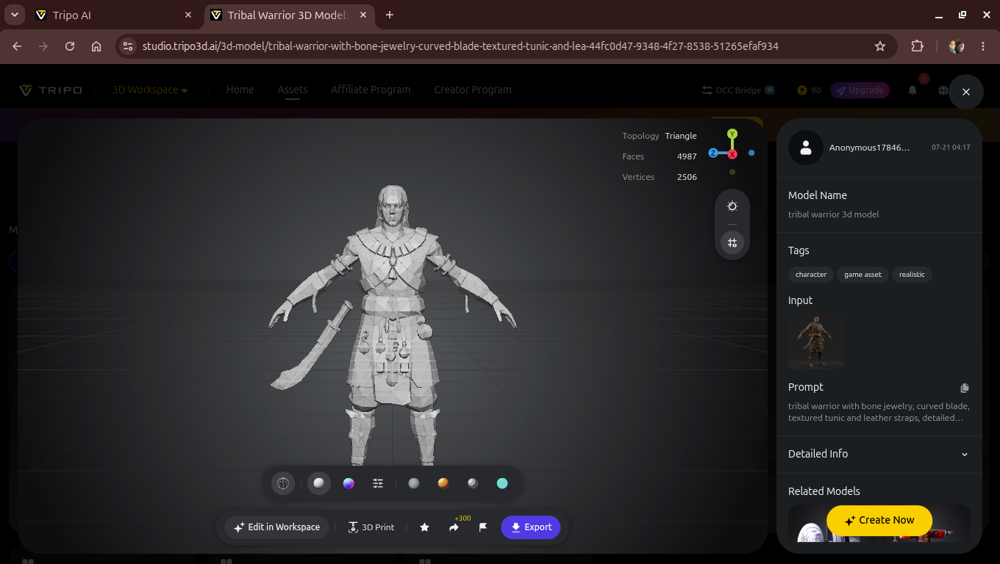
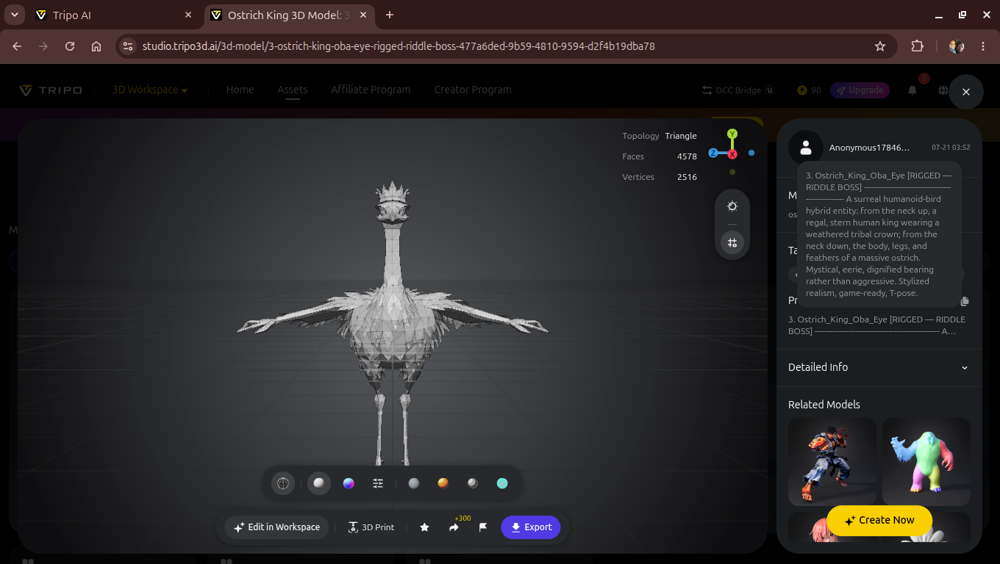
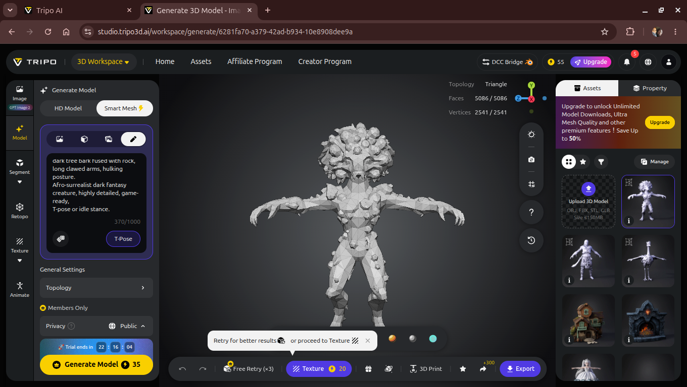
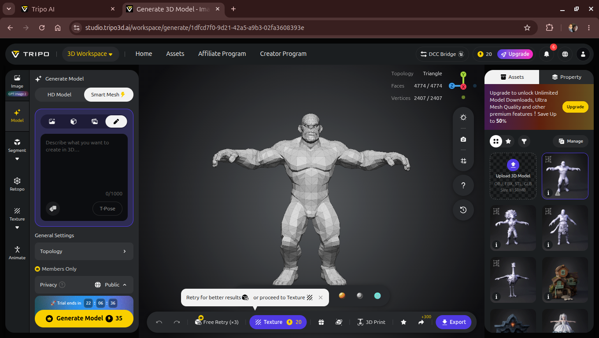
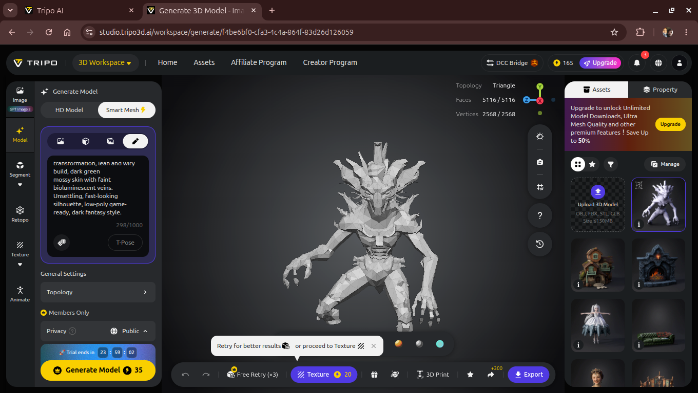

Three parts into this series, Akara-ogun's journey through Igbo Irúnmọlẹ̀ has lived entirely as 2D: first Jetpack Compose, then a LibGDX port. Part IV is a new branch, not a replacement — a third, independent Unity prototype that reimagines the same story in 3D. It's the earliest and roughest of the three so far: a one-click world-builder script standing in primitives where meshes will eventually go, a riddle-and-wisdom loop lifted straight from the book's actual structure, and — for the first time in this series — a real test of what AI-generated 3D assets can and can't deliver against a project that has never used a single piece of external art.
Parts I through III of this series were about one architectural idea proven twice — a lean Kotlin/Compose
engine, then the same skeleton ported to LibGDX, both still drawing every scene procedurally with
zero external art in either app. Part IV breaks that streak on purpose. ogbojuode-3d
is a separate Unity project, targeting Android, exploring what the same story feels like as an explorable
3D space instead of branching text panels — real-time movement, line-of-sight encounters, a hub village
you can actually walk around in rather than read a description of.
That means a different question than the last two parts had to answer. Compose and LibGDX both let the "no external art" rule hold because Canvas-drawn geometry was enough to represent a scene. A walkable 3D forest with a hunter, four creatures, and a riddle-posing bird-king is a different ask — and this part is as much about testing where AI-generated 3D asset pipelines actually help as it is about the game itself.
The whole prototype currently runs off eleven files — ten runtime scripts and one Editor tool. That
Editor tool, SceneSetupWizard.cs, is the load-bearing piece: a single menu command,
Ogboju Ode → Build Entire Universe, that assembles the hub village, the forest, all
four creature-tier encounters, the player, camera, lighting, and two manager singletons — entirely out
of primitive geometry, entirely from code, with no scene file to hand-edit.
The point of building it this way was speed of iteration over fidelity: every creature, prop, and lighting choice is a code change, not a scene-editing session, so the whole layout can be regenerated from scratch in one click whenever a design decision changes.
Agbako, Ijamba, and Eru all run through the same CreatureAI component — they differ in
stat presets, not behavior logic, which keeps the file count honest as the creature roster grows.
It would have been easy to build this as pure combat — walk into the forest, fight four things, done. That isn't what Ògbójú Ọdẹ nínú Igbó Irúnmọlẹ̀ is actually structured around. The book's real shape is expeditions launched from a safe village into danger, moral riddles posed by spirits along the way, and wisdom carried home — not just kills tallied.
"I am king above the neck, beast below it. What manner of thing am I?"
— The Ostrich-King, riddle prompt in ogbojuode-3d
Two of the six characters in this prototype aren't combat encounters at all. The Ostrich-King
(Oba Ẹyẹ) holds his ground and poses a riddle; ignore him and he's harmless, fail him and he
turns hostile. Three wandering ghommid spirits carry smaller riddles of their own. Both
route through the same RiddleGiver component and reward a separate WisdomTracker
singleton — deliberately not the same resource as player health, since wisdom is meant to persist even
through a death-and-respawn cycle at the hub.
Clay huts, six carved Arugba pillars around a lit bonfire, a spike perimeter facing the tree line.
Mahogany trees and scattered glowing "spirit fungus" markers, stretching north from the village boundary.
Eru (fast, fragile) nearest the village; Ijamba (slow, brutal) further in; Agbako (towering) deepest before the boss.
Riddle encounters, not health bars — the loop's actual point.
WisdomTracker and ExpeditionManager track state across the whole run.
RiddleGiver currently auto-resolves as "correct" on interact — there's no answer-input
screen yet, so the loop is testable end-to-end without one. The reward and hostility logic is already
wired to a single method call, waiting for a real prompt.
This is the part of the series that's genuinely new. Parts I–III never needed an art pipeline because the renderer drew everything. A walkable 3D world needs actual meshes, and generating a hunter, four creatures, and a riddle-boss by hand wasn't realistic timeline-wise — so this became a real test of prompt-driven 3D generation tools, credits and all.






All six character-tier assets from the design brief — Akara-Ogun, Agbako, Ijamba, Eru, the Ostrich-King, and a wandering ghommid spirit — have now been through this pipeline at least once, mostly on Tripo AI's free tier via Smart Mesh generation, which trades some fidelity for topology that's actually clean enough to drop into a real-time engine without a manual retopology pass first.
Free-tier credits capped character generation faster than expected, the Image stage's model choice was locked to a single option, and free-tier outputs currently carry a non-commercial license — a genuine constraint for a series that has otherwise been fully open source at every layer. Props (the musket, machete, huts, pillars, trees) are being sourced instead from CC0 libraries like Kenney and Poly Haven, reserving remaining AI-generation credits for the handful of assets — the six characters above — where a generic library piece won't carry the story's specific mythology.
Worth being direct about this rather than glossing over it: AI-generated 3D asset ownership and licensing is genuinely unsettled ground right now — provider terms are still shifting, and how courts or platforms will eventually treat AI-generated meshes long-term isn't something anyone can say with confidence today. This experimentation proceeded anyway, on the free tier, treating everything produced so far as prototype-grade rather than shippable — the working assumption is that final, commercial-ready assets get revisited (regenerated on a paid tier with clear commercial terms, or replaced with custom/CC0 work) before anything ships, not that today's outputs are the finished answer.
Every character above still stands in the running build as colored primitive geometry — cubes, capsules, cylinders — while the real meshes get rigged and imported. That's deliberate: the gameplay loop (movement, combat, riddles, wisdom tracking) had to prove itself playable before spending further AI-generation credits or artist time dressing it up.
RiddleGiver.MobileTouchUI.cs exists and is wired to the player controller, but hasn't been laid out on a Canvas or tested on a physical device.Parts I through III proved one engine could tell this story twice, in two different rendering technologies, without ever importing a single external asset. Part IV deliberately gives that up — not because the principle stopped mattering, but because a walkable 3D forest genuinely needs meshes a Canvas renderer was never going to produce. What's held constant instead is the harder thing: the riddle-and-wisdom structure that makes this story what it is, rather than a generic monster-killing loop wearing the book's character names. Six creatures now exist as real, rigged-ready 3D assets. The hunter still can't walk past a spirit without being asked a question first. That was the part worth keeping — even while the legal ground under AI-generated assets keeps shifting under everyone's feet, and this prototype proceeded through that uncertainty deliberately, treating what exists today as a testbed rather than a finished answer.